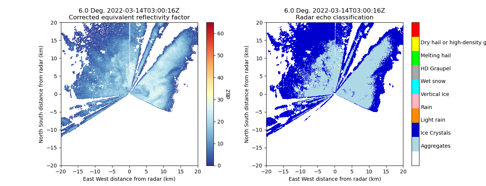

Note
Go to the end to download the full example code.
Hydrometeor Classification with Custom Frequency Settings#
This script shows how to use hydrometeor classification for X-band radar data. We are reading radar data, plotting some variables of interest and applying the classification to identify types of precipitation.
Note
The script initially attempts hydrometeor classification without specific radar frequency information for band selection.
- 
{'nyquist_velocity': {'long_name': 'Nyquist velocity', 'units': 'm/s', 'standard_name': 'nyquist_velocity', 'data': masked_array(data=[15.9, 15.9, 15.9, ..., 15.9, 15.9, 15.9],
mask=False,
fill_value=1e+20)}}
import matplotlib.pyplot as plt
import numpy as np
from open_radar_data import DATASETS
import pyart
filename = DATASETS.fetch("gucxprecipradarcmacppiS2.c1.20220314.025840.nc")
radar = pyart.io.read_cfradial(filename)
figure = plt.figure(figsize=(15, 4))
ax1 = plt.subplot(1, 3, 1)
display = pyart.graph.RadarDisplay(radar)
ax1 = display.plot("DBZ", vmin=0, vmax=50) # DBZ corrected_reflectivity
plt.xlim(-20, 20)
plt.ylim(-20, 20)
ax2 = plt.subplot(1, 3, 2)
ax2 = display.plot("corrected_differential_reflectivity", cmap="pyart_Carbone42") # ZDR
plt.xlim(-20, 20)
plt.ylim(-20, 20)
ax3 = plt.subplot(1, 3, 3)
ax3 = display.plot("corrected_specific_diff_phase", cmap="pyart_Carbone42") # KDP
plt.xlim(-20, 20)
# ### When instrument parameters does not have radar frequency info.
print(radar.instrument_parameters)
# This shows an issue where radar frequency information is missing. Without this hydrometeor classification will default to C-band.
# Get classification
hydromet_class = pyart.retrieve.hydroclass_semisupervised(
radar,
refl_field="corrected_reflectivity",
zdr_field="corrected_differential_reflectivity",
kdp_field="filtered_corrected_specific_diff_phase",
rhv_field="RHOHV",
temp_field="sounding_temperature",
)["hydro"]
radar.add_field("hydro_classification", hydromet_class, replace_existing=True)
# Use `radar_freq` parameters
# To address this issue, radar frequency information can be supplied to the function with `radar_freq` parameter.
# Get classification
hydromet_class = pyart.retrieve.hydroclass_semisupervised(
radar,
refl_field="corrected_reflectivity",
zdr_field="corrected_differential_reflectivity",
kdp_field="filtered_corrected_specific_diff_phase",
rhv_field="RHOHV",
temp_field="sounding_temperature",
radar_freq=9.2e9,
)["hydro"]
radar.add_field("hydro_classification", hydromet_class, replace_existing=True)
# Add radar frequency to the radar object
# Incorporating radar frequency into the radar object enhances processing pipeline.
# Add X-band frequency information to radar.instrument_parameters
radar.instrument_parameters["frequency"] = {
"long_name": "Radar frequency",
"units": "Hz",
"data": [9.2e9],
}
radar.instrument_parameters
# Let's run the classification again and the warning should change telling the radar frequency from instrument parameters is used.
hydromet_class = pyart.retrieve.hydroclass_semisupervised(
radar,
refl_field="corrected_reflectivity",
zdr_field="corrected_differential_reflectivity",
kdp_field="filtered_corrected_specific_diff_phase",
rhv_field="RHOHV",
temp_field="sounding_temperature",
radar_freq=9.2e9,
)["hydro"]
radar.add_field("hydro_classification", hydromet_class, replace_existing=True)
# Note that the frequency used here is from the radar object, not the user supplied.
# plotting
import matplotlib.colors as colors
hid_colors = [
"White",
"LightBlue",
"MediumBlue",
"DarkOrange",
"LightPink",
"Cyan",
"DarkGray",
"Lime",
"Yellow",
"Red",
]
cmaphid = colors.ListedColormap(hid_colors)
cmapmeth = colors.ListedColormap(hid_colors[0:6])
cmapmeth_trop = colors.ListedColormap(hid_colors[0:7])
def adjust_fhc_colorbar_for_pyart(cb):
cb.set_ticks(np.arange(1.4, 9, 0.9))
cb.ax.set_yticklabels(
[
"Aggregates",
"Ice Crystals",
"Light rain",
"Rain",
"Vertical Ice",
"Wet snow",
"HD Graupel",
"Melting hail",
"Dry hail or high-density graupel",
]
)
cb.ax.set_ylabel("")
cb.ax.tick_params(length=0)
return cb
def adjust_meth_colorbar_for_pyart(cb, tropical=False):
if not tropical:
cb.set_ticks(np.arange(1.25, 5, 0.833))
cb.ax.set_yticklabels(
["R(Kdp, Zdr)", "R(Kdp)", "R(Z, Zdr)", "R(Z)", "R(Zrain)"]
)
else:
cb.set_ticks(np.arange(1.3, 6, 0.85))
cb.ax.set_yticklabels(
["R(Kdp, Zdr)", "R(Kdp)", "R(Z, Zdr)", "R(Z_all)", "R(Z_c)", "R(Z_s)"]
)
cb.ax.set_ylabel("")
cb.ax.tick_params(length=0)
return cb
def two_panel_plot(
radar,
sweep=0,
var1="corrected_reflectivity",
vmin1=0,
vmax1=65,
cmap1="RdYlBu_r",
units1="dBZ",
var2="corrected_differential_reflectivity",
vmin2=-5,
vmax2=5,
cmap2="RdYlBu_r",
units2="dB",
return_flag=False,
xlim=[-150, 150],
ylim=[-150, 150],
):
display = pyart.graph.RadarDisplay(radar)
fig = plt.figure(figsize=(13, 5))
ax1 = fig.add_subplot(121)
display.plot_ppi(
var1,
sweep=sweep,
vmin=vmin1,
vmax=vmax1,
cmap=cmap1,
colorbar_label=units1,
mask_outside=True,
)
display.set_limits(xlim=xlim, ylim=ylim)
ax2 = fig.add_subplot(122)
display.plot_ppi(
var2,
sweep=sweep,
vmin=vmin2,
vmax=vmax2,
cmap=cmap2,
colorbar_label=units2,
mask_outside=True,
)
display.set_limits(xlim=xlim, ylim=ylim)
if return_flag:
return fig, ax1, ax2, display
lim = [-20, 20]
fig, ax1, ax2, display = two_panel_plot(
radar,
sweep=0,
var1="corrected_reflectivity",
var2="hydro_classification",
vmin2=0,
vmax2=10,
cmap2=cmaphid,
units2="",
return_flag=True,
xlim=lim,
ylim=lim,
)
display.cbs[1] = adjust_fhc_colorbar_for_pyart(display.cbs[1])
Total running time of the script: (0 minutes 12.097 seconds)